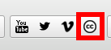
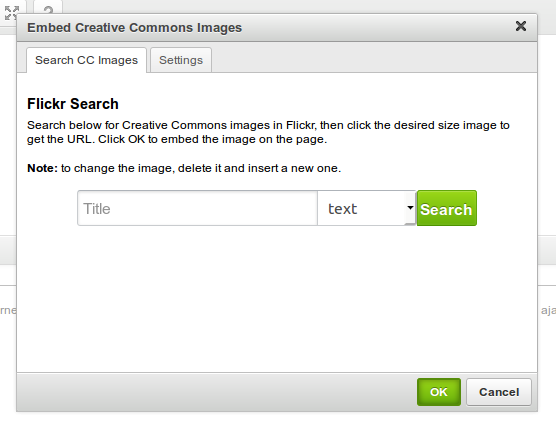
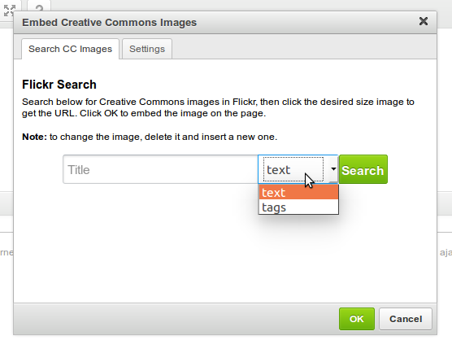
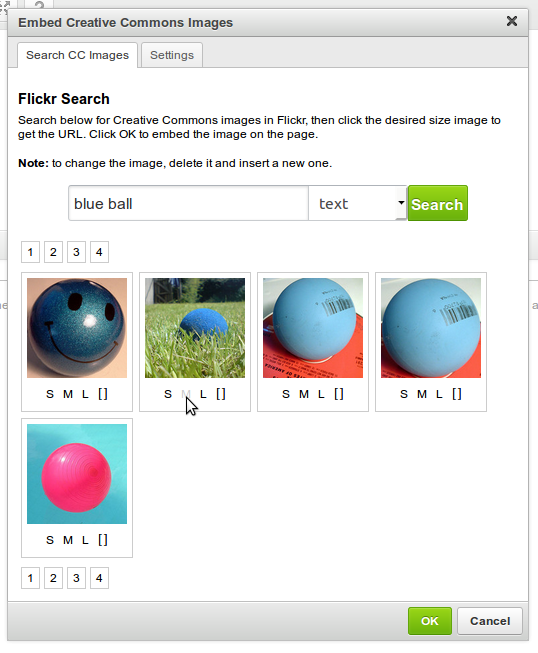
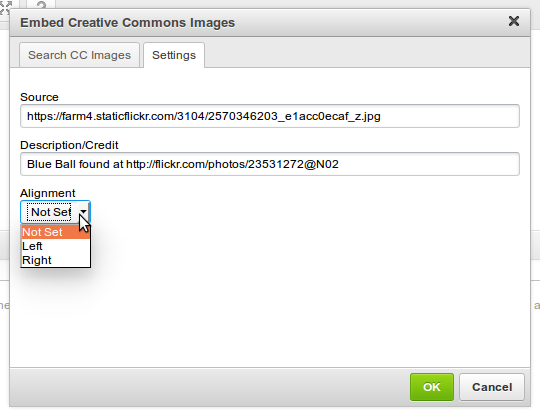
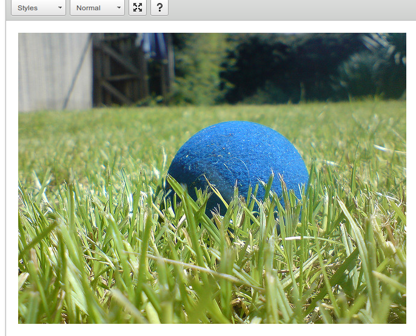

This plugin allows you to search Flickr for Creative Commons Images and embed an image at the current cursor's position.
-
Click on the Creative Commons Images icon.

-
A dialog will appear, giving you the option to search for Creative Commons Images in Flickr either by text or tags.

Select which is most appropriate for your query, then type your search terms into the text field and click 'Search' (or hit ENTER).

-
You will see a number of search results. Each result shows a thumnail for the image, as well as links to 4 image sizes: small, medium, large and square. Click whichever size is best for your document.

-
You will be taken to the Settings tab. By clicking on the image, the 'Source' and 'Description/Credit' fields will be pre-filled with data relating to the image. You may edit these fields, but it is advised that you leave the credit to the original author intact.

It is also possible to determine whether the image is aligned to the left or right by choosing an alignment.
-
Click OK to embed the image in the page.

-
If you wish to change the image, delete it from the page, then click the Creative Commons Images icon from the editor and search again.